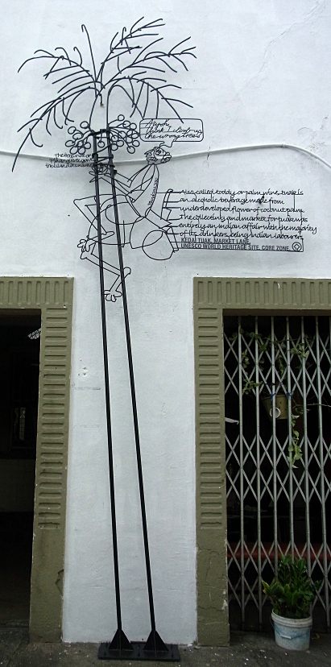
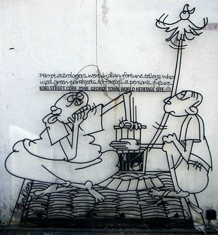

©
Street Art of George Town
17-19 Nov 2015, George Town, Penang, Malaysia
-------------------------------------------
My 30-day visa-on-arrival for Thailand was about to expire, some 2 weeks before my flight from Bangkok to Indonesia. So I made my first "visa run" -- leaving the country for the express purpose of re-entering to get a new visa-on-arrival. One of the easiest options is to take a train all the way south to Butterworth, Malaysia. One could immediately return to Thailand at the border, but I choose to spend a couple of days on Penang Island, in historic George Town. It's really a fun town with a thriving Indian sector, Chinese sector, lots of traces of British colonial rule, and a UNESCO World Heritage Site to boot.
-------------------------------------------
|
|
The following iron rod sculptures (wrought-iron caricatures) are examples found on many streets in both the core and buffer zones of George Town. Many are life-sized figures, and are attached to the sides of the buildings, often near an intersection. Some are elevated to the second story, so don't forget to look up! |
Wrong Tree "The betelnut or Pihang tree gave the island its name.
Aiyoh, think I climb up the wrong tree!
Also called toddy or palm wine, tuak is an alcoholic beverage made from underveloped flower of coconut palm. The collecting and market for tuak was entirely an Indian affair with the majority of its drinkers being Indian laborers. KEDAI TUAL, MARKET LANE, UNESCO WORLD HERITAGE SITE, CORE ZONE.©" (index 10) |
 |
|
Gold Teeth "The traditional Indian goldsmith sat cross legged on a floor mat. bent over a small bench to work their work demanded patience, cretivity and skill. QUEEN STREET, CORE ZONE, GEORGE TOWN WORLD HERITAGE SITE.©" (index 36) |
| Mahjong "Mahjong (the game of sparrows) -- a favorite pastime for the elderly. STEWART LANE, CORE ZONE, GEORGE TOWN WORLD HERITAGE SITE.©" (index 32) |
|
|
Roti Benggali "Roti Benggali came from the word "Penggali ('shareholders' in Tamill) KING STREET, CORE ZONE, GEORGE TOWN WORLD HERITAGE SITE.©" (index 9) |
| Tok Tok Mee "Tok tok mee is so-called because hawkers would strike a 'tok-tok' sound to signal their presence. CHULA STREET, CORE ZONE, GEORGE TOWN WORLD HERITAGE SITE.©" (index 8) |

|
|
Quiet Please! "To the dismay of parishioners of the Portuguese church there, church street also housed the headquarters of the notorious Chee Hin secret society. CHURCH STREET, CORE ZONE, GEORGE TOWN WORLD HERITAGE SITE.©" (index 31) |
| Untrained Parakeet "Parrot astrologers were Indian fortune tellers, who used green parakeets to foretell a person's future. KING STREET, CORE ZONE, GEORGE TOWN WORLD HERITAGE SITE.©" (index 15) |
 |
|
Temple Day "During the first and fifthteenth day of any lunar month the Goddess of Mercy Temple is packed with devotees seeking divine guidance. LORONG MUDA, CORE ZONE, GEORGE TOWN WORLD HERITAGE SITE.©" (index 35) |
| Jimmy Choo "This is the place where the famous shoe designer, Jimmy Choo started his apprenticeship. MUNTRI STREET, BUFFER ZONE, GEORGE TOWN WORLD HERITAGE SITE.©" (index 1) |
|

|

|

|
Narrowest Five Foot Way (index 5)These adorn the narrowest "five foot way" in Penang. The plaque has been removed (for repair?). |